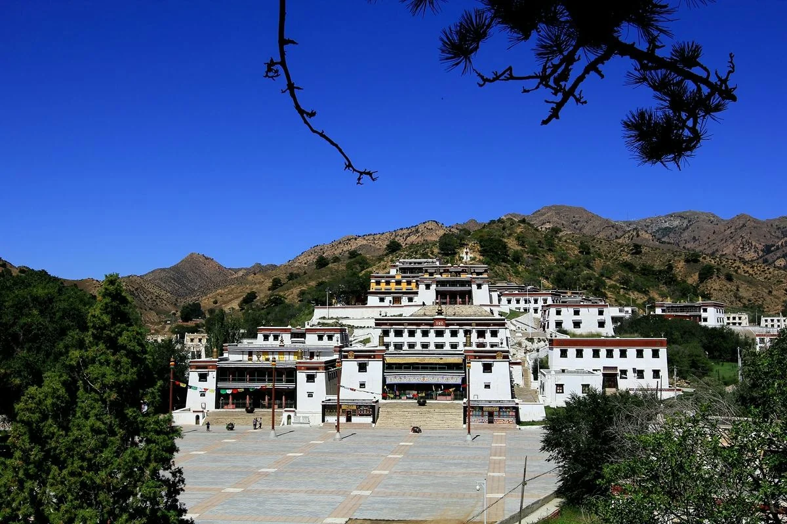
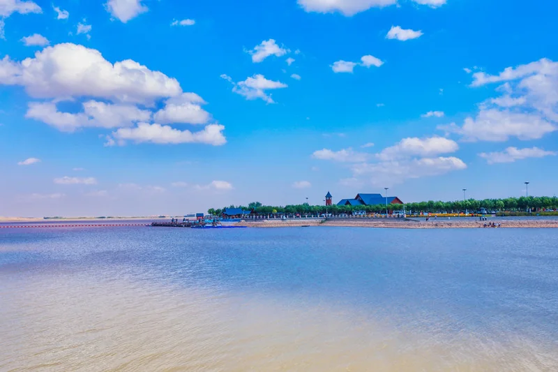

CITY 02 / 12 · BAOTOU
包头包头市 · 鹿城
一半是高炉与钢花，一半是召庙与城中草原。包头的反差，正是它的迷人之处。
2.77 万 km²面积
约 274 万常住人口
21 处必游点位
3 项非遗项目
鹿城
CITY PORTRAIT
包头，蒙古语意为“有鹿的地方”，又称鹿城。它是“一五”时期成长起来的工业城市，也是阴山脚下、黄河岸边多民族文化交流的古老通道。
钢铁、稀土与装备制造塑造了它的现代性格；五当召、美岱召与赛汗塔拉则保留了另一种节奏。包头的旅行体验很像一次双线叙事：上午在寺院听风铃，下午在城中草原看落日，晚上再吃一顿莜面。
草原钢城稀土之都城中草原
MUST SEE
必游景点
21 处点位，覆盖包头最值得走进去的自然与人文现场。点击任意一张卡片，展开完整讲解与研学提示。
LIVING HERITAGE
非遗图谱
从音乐、舞蹈到技艺与民俗。这里的每一项都不是“表演给游客看”的节目，而是仍在被传承的生活。
TASTE OF PLACE
在地风物
一座城的味道，往往比景点更接近日常。以下四样，是包头餐桌上最常见的坐标。
莜面
搓、推、卷，配羊肉汤
黄河鲤鱼
河鲜本味，红烧最家常
固阳荞面
山地杂粮，筋道清香
羊肉烧麦
皮薄馅足，配砖茶
ONE DAY ROUTE
一日鹿城 · 召庙与草浪
把上面的点位按时间排成一条线。不必严格照表，按你的节奏删减一站，也是一种走法。
08:00
五当召
清晨进山，白墙金顶在晨光里最安静。
12:30
美岱召
在土默川平原看城寺合一的明代遗存。
16:30
赛汗塔拉
回城，在城中草原骑行等日落。
19:30
莜面馆
一笼莜面、一碗羊肉汤，结束双线叙事。
路线提示 · 五当召、美岱召在包头北、东两个方向，适合自驾串联；赛汗塔拉与南海湿地可放在同一天的另一半。
